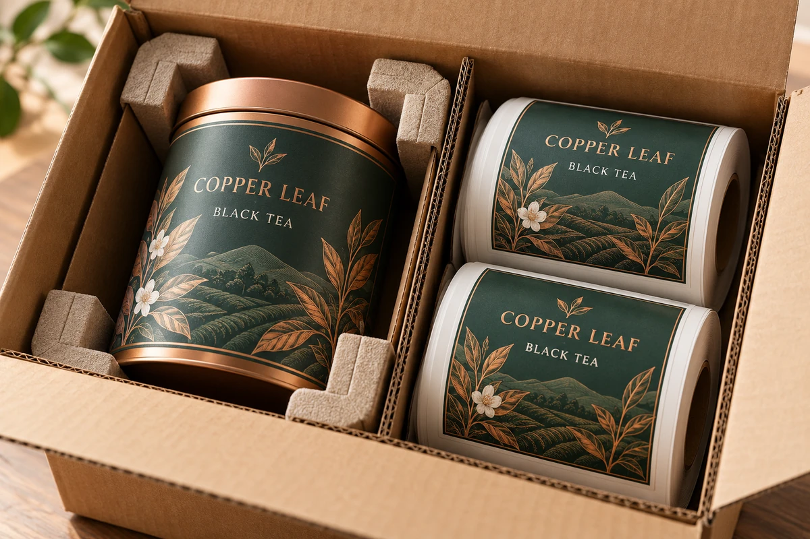
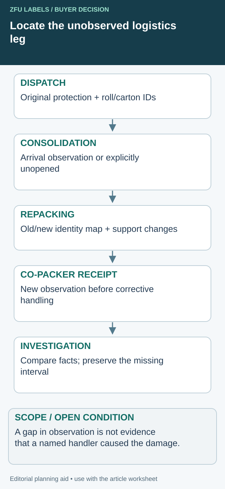

The printed labels pass inspection, but the shipment arrives with a crushed carton and rolls that no longer load cleanly. The buyer's order specified film, color and unwind. It said little about how the finished rolls should be protected between the printer and the packing line.
Specify transport protection around the actual roll and delivery route. Keep physical damage, storage condition and machine usability as separate observations. Good printing cannot compensate for a core or edge damaged before the roll reaches its applicator.

Follow the protection when the carton changes
A label shipment can pass through a consolidator, warehouse and co-packer before a roll reaches its station. Map the actual legs and identify where the protective arrangement changes. The final carton may no longer be the pack the printer dispatched. That is a reason to preserve the handoff, not to assign fault to the last handler.


| Route event | Evidence worth recording | Unknown to keep visible |
|---|---|---|
| Printer dispatch | Roll/carton identities and agreed protective arrangement | Unobserved later handling |
| Consolidation receipt | Visible condition before opening | Internal condition if unopened |
| Repacking | Old-to-new carton/roll mapping and protection changed | Whether the replacement pack represents the original arrangement |
| Co-packer receipt | Arrival condition and retained marks/supports | When a previously unobserved change occurred |
| Internal staging | Further move, opening or protection removal | Conditions not recorded between checkpoints |
Use photographs tied to the event and identities. Reusing a dispatch photograph in a later row makes the record look complete without adding a later observation. An intact outer carton also does not establish every internal roll's condition.
Read the timeline without inventing the missing leg
Suppose a hypothetical shipment was photographed at dispatch, repacked without internal condition records, and later received with displaced roll edges. The supported facts locate a gap between observations; they do not establish whether winding, transport or repacking caused the displacement. Keep the affected roll, packaging and change history available for the relevant investigation.
Ask the logistics owner and supplier whether the original supports can remain during consolidation or whether a different protective arrangement needs review. A smaller shipping carton may reduce freight volume but remove support or identity. Compare the actual proposals, unpacking work and evidence rather than treating either more packaging or fewer cartons as automatically better.
At a split delivery, retain the relationship between the original lot/roll and new shipment marks. A new carton number should not reset manufacture date, release stock on hold or make an old roll appear newly produced.
This timeline is an editorial evidence aid. It is not a transport test, a universal packing design or a finding of liability. If a route-specific qualification is required, agree its method and scope with the responsible packaging and logistics teams.
Describe the roll that must survive the journey
Record the core inside diameter, maximum roll outside diameter, web width and intended loading method. Include the number of rolls and the proposed carton arrangement. Large, narrow or heavy rolls may need different handling from short trial rolls; ask the supplier for an arrangement suited to the specific product.
The roll specification guide covers machine and delivered-roll limits. Shipping protection should preserve those agreed characteristics rather than introduce a generic carton requirement unrelated to the roll geometry.
Ask how the pack prevents rolls from moving, contacting damaging surfaces or carrying unintended loads. Do not prescribe a universal stacking orientation or compression limit without the packaging supplier's relevant evidence. The useful requirement is the protected deliverable and the supported handling arrangement.
Distinguish protection jobs
Outer cartons provide one layer of protection. Internal separation, edge protection, wrapping and suitable support may address different risks. Identify the purpose of each proposed element so the receiving team can tell whether it is missing or displaced.
Moisture and temperature also matter to pressure-sensitive materials. HERMA's storage and processing guidance notes sensitivity to environmental conditions and advises protection from impact, pressure and climatic variation for its products. Use the selected construction's applicable instructions; do not turn one supplier's guidance into a universal specification for every finished label.
Avoid promising that a particular bag or carton makes rolls waterproof or suitable for any transport climate. Ask what protection the packaging provides and what conditions remain outside it.
Prepare a transport-packaging brief
| Requirement | Confirmation to request |
|---|---|
| Roll geometry | Core, outside diameter, web width and roll mass where relevant |
| Internal support | How the roll and core are supported without damaging load |
| Separation | Prevention of harmful roll-to-roll and edge contact |
| Environmental protection | Packaging and applicable storage/transport conditions |
| Carton allocation | Roll identity, count and permissible movement |
| Handling | Supported stacking, opening and unloading instructions |
| Identification | SKU, revision, roll/lot and carton reference |
| Damage response | Photos, segregation and notification route before use |
This brief should be reviewed with the supplier and logistics owner. It does not establish a tested transport-packaging design or a claim that the shipment will tolerate every route.
Check what the receiving team can actually observe
Before opening, photograph visible damage and the carton identification. During opening, record displaced supports, wet packaging, compressed edges and core condition where relevant. Keep the connection between each observation and its roll or carton.
Do not diagnose the cause from appearance alone. A telescoped roll, for example, can prompt a review of winding, handling and transport without proving which event caused the condition. The telescoped-roll guide helps preserve geometry and roll identity for that investigation.
If a roll may be damaged, avoid unwinding or rewinding it merely to make it look neat before documenting the condition. Ask the responsible technical owner how to inspect it safely and whether a machine trial is appropriate.
Consider the last metre of handling
Transport does not end at the warehouse door. A sound carton can be damaged during internal transfer, storage or line staging. Identify who moves the rolls, where they wait and how partially used material returns to storage.
Keep protective packaging until the material is needed where the construction's guidance supports that practice. The roll storage guide separates production dates, storage conditions and release decisions. A new delivery date does not reset the material's age or erase a known exposure.
For split deliveries, agree whether the supplier repacks held stock and how original lot identities are preserved. Repacking can be useful, but it should not convert an older roll into an apparently new manufacturing batch.
Compare packaging cost against the actual risk
More packaging is not automatically better. Extra handling, material and unpacking time may add cost without solving the observed failure. Ask the supplier to explain the proposed protection and compare it with the route, roll dimensions and previous evidence available.
A hypothetical tea-label order might need improved internal separation rather than a larger outer box. Another order might need a different pallet arrangement or a change in the maximum roll size. These are possibilities to assess, not claims that any one adjustment will prevent damage.
Where damage recurs, ask whether a route-specific packaging evaluation is appropriate. Record the test or trial conditions and the limits of the conclusion instead of describing one successful shipment as proof for every destination.
Agree how cartons will be opened
Ask the receiving team how it normally opens the package and where rolls are placed afterward. A protective arrangement should allow the material to be removed without cutting into the web or losing its identity. Include the supported opening instruction with the proposed pack, and review any recurrent unpacking damage separately from damage already visible at delivery.
Put receipt and release in the same conversation
Agree who decides whether damaged material can be used, reworked or replaced. Keep the quantity provisionally held visible so production planning does not assume the full delivery is available.
Resolve the specific label handoff
Include roll geometry, route legs, repacking points and dated condition evidence available at each handoff.
Prepare the label specification inquiry. The form opens an email draft for your review; attachments go through the listed email or WhatsApp route. Actual supply scope, pricing, samples and timing need project confirmation.
Related decisions: Mixed-SKU Label Cartons: Make the Inner Roll Identity Survive Unpacking; A Label Quality Complaint: Preserve the Pack and Roll Before Rework; Label Roll Shelf Life: Separate the Dates Before Releasing Older Stock